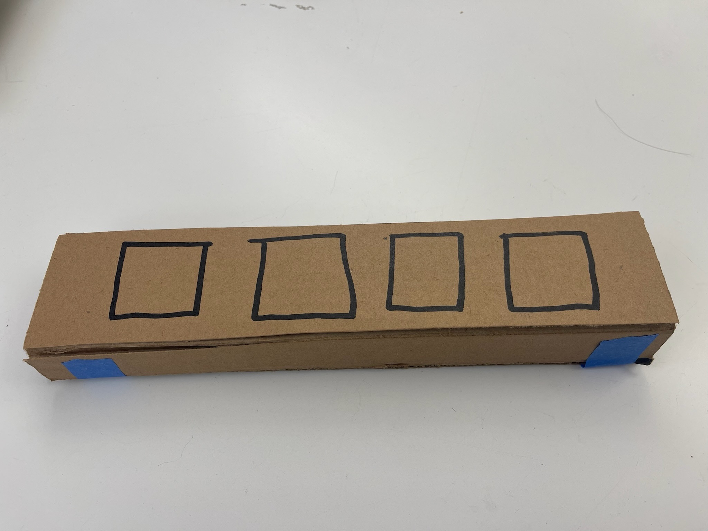
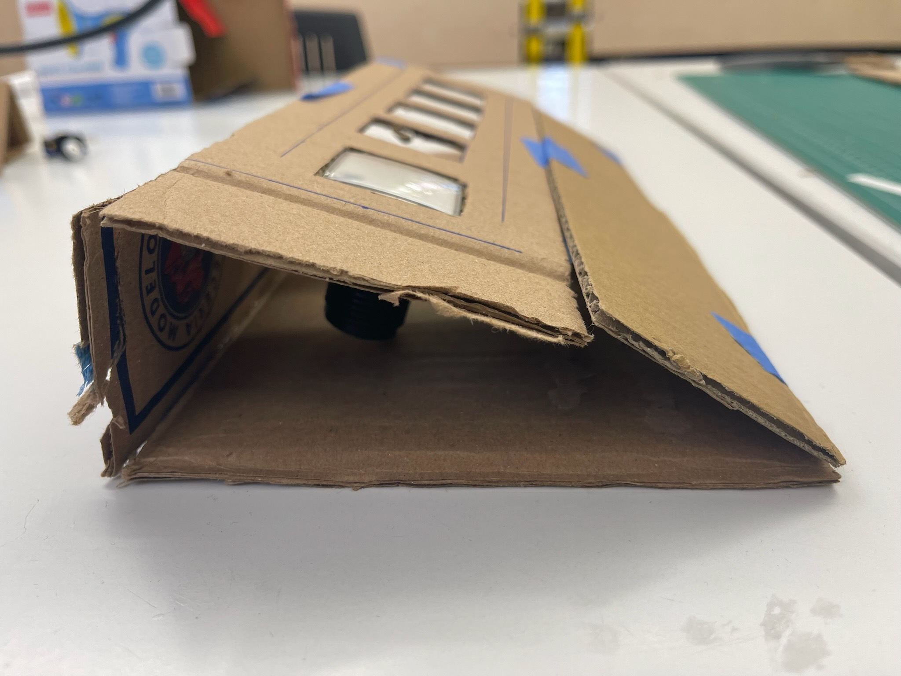
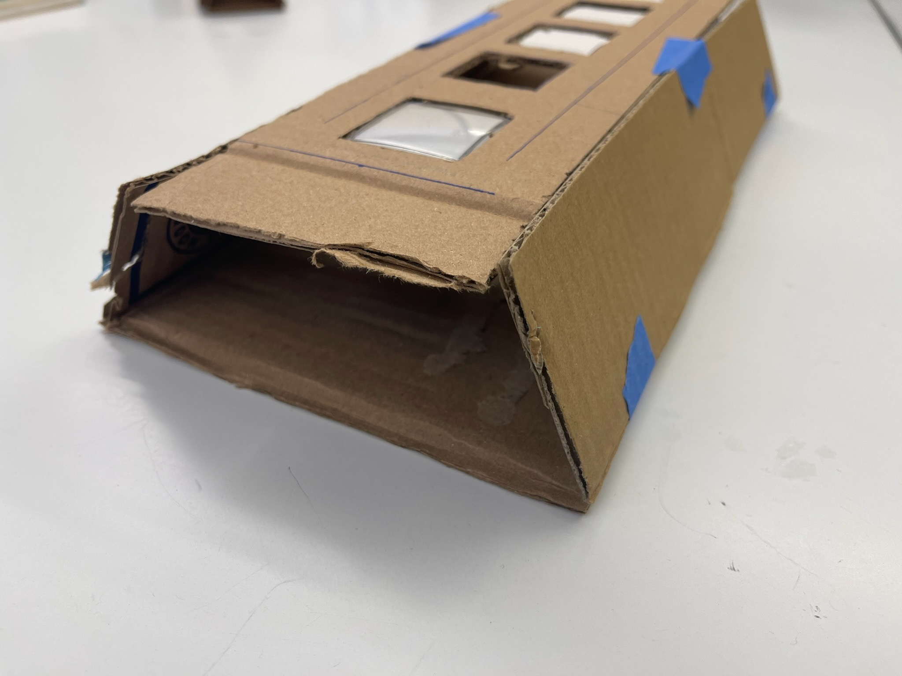
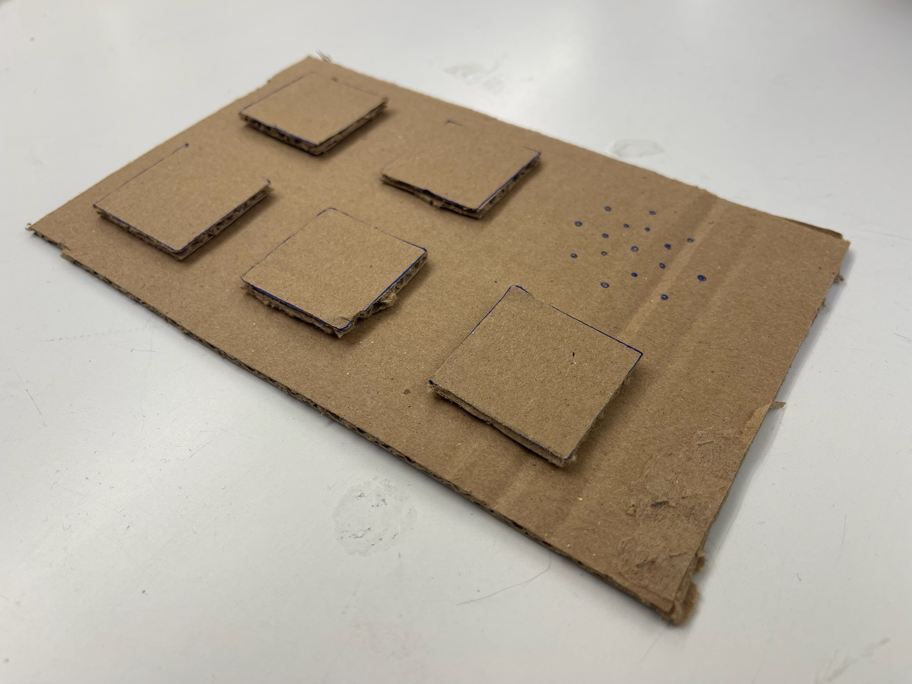
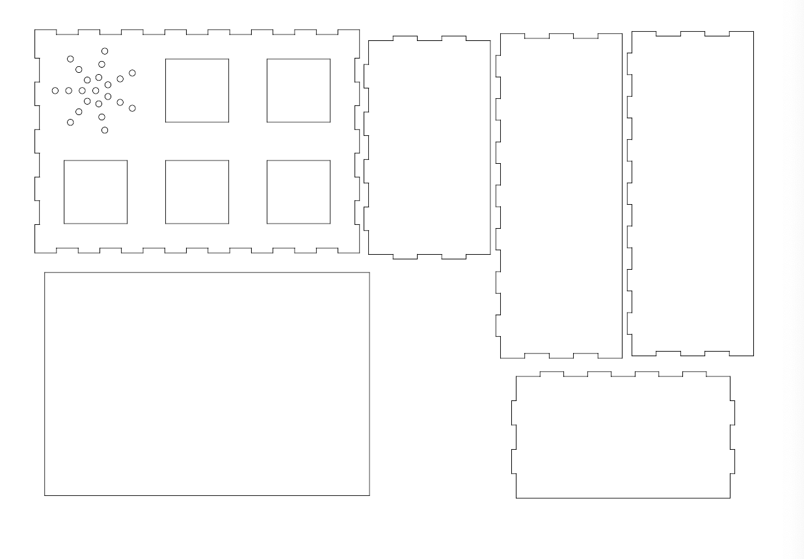
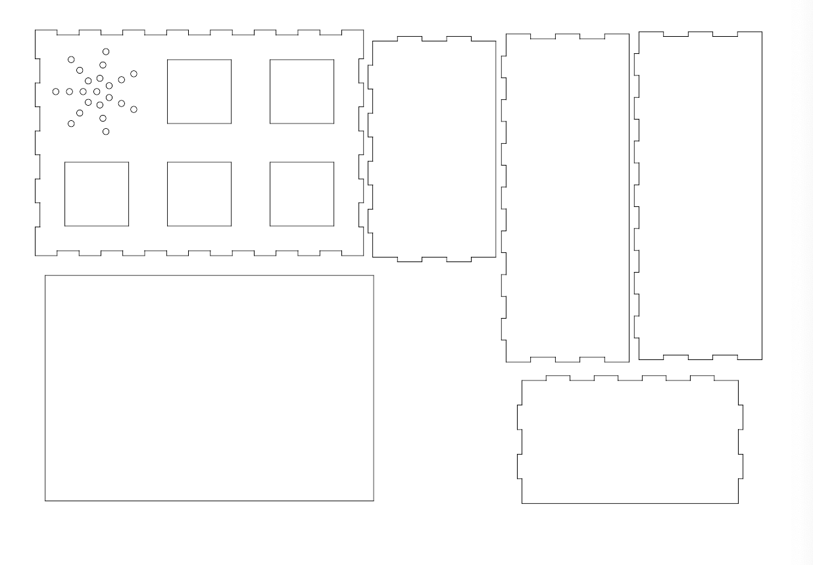
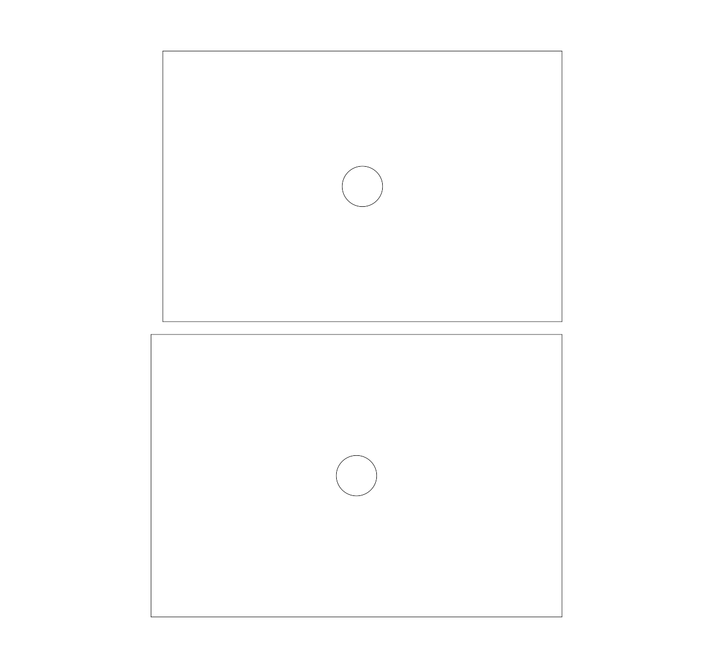
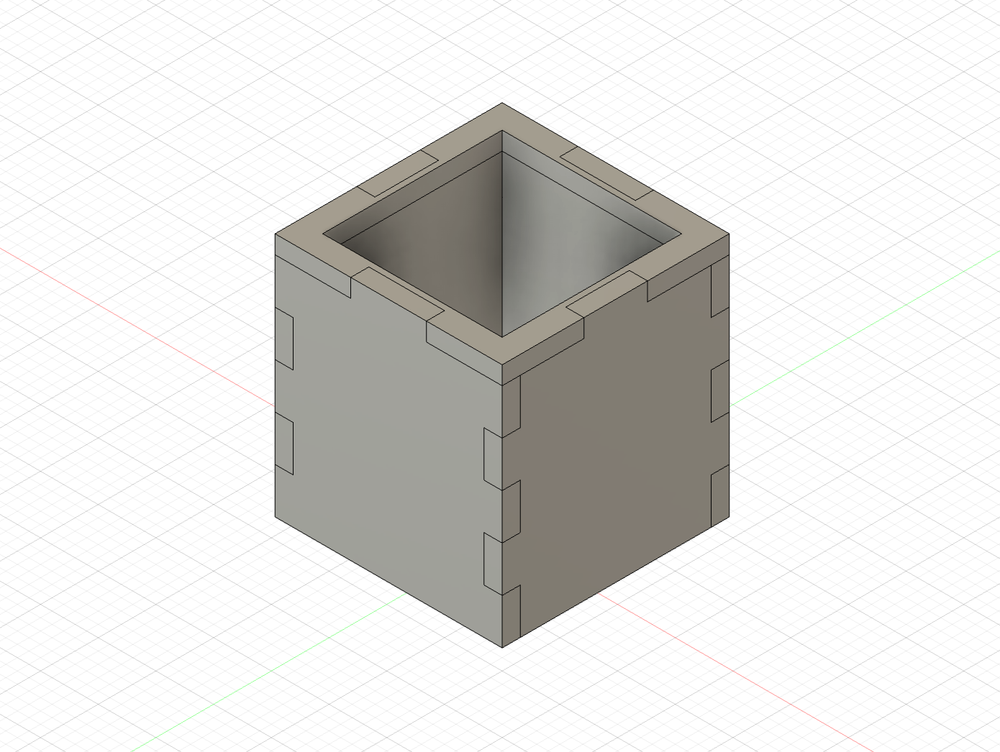
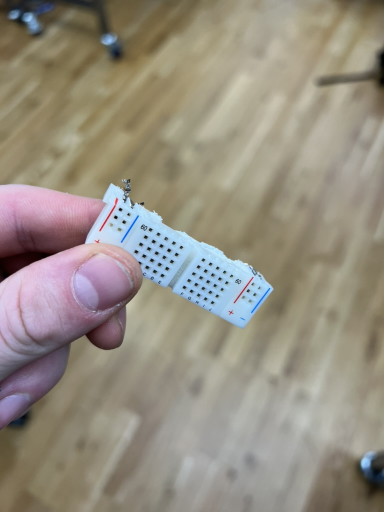

Virtue Signal
created with Kalinda Panholzer @ kalinda.me
for Critical Objects by Pedro Olivera at ITP

The device allows a user to perform digital allyship for a number of issues at the press of a button. When a button is lit up, the user can press it to create a post on Bluesky. As the button is pressed, an angelic noise plays.

Ideation Process
We had a discussion today and tried to get to the bottom of our proposal. This process led to the discarding of the form of the megaphone. This out and about protest was not what we felt is necessary to critique. The topic was focused on performative digital allyship. The central idea we are trying to critique is this easy activism, activated at the press of a button, from a desk, while sitting at home working remotely. We shopped around and selected this button because we could UV print logos on top and it has an integrated LED. We discussed having it be like an advent calendar, a ritual activity performed over time. Integrated into the user's life.

Cardboard Phase
After the button came, we did some prototyping in cardboard to see how it would fit on a device. If I were to do this again, I would do the cardboard prototyping first before we got the button as a way to inform its size, because even after we measured it all out, we were still surprised by its width and depth.
This was our first version. I like that it sits on the desk well and faces the user. I like that it keeps the depth of the button hidden. At this point in the process, we had spent a long time talking about what to do and had not yet been able to build and the angles of this piece felt too challenging for the time we had left to build. I think that its tilt came back in at the end when we added the picture frame.
This design is way too much like a power strip, and with the depth of the buttons we would have to make it so much taller than wide.

This form we did next was compelling because its lack of definition allowed us to explore a couple different configurations.
I love how this is almost like a palm rest, it's form suggests that the hand rests on it and selects.
In contrast, this form doesn't say much. We were still struggling with how to get these angles off a laser and so started to think, whats the best possible box we could do?
This final flat prototype was compelling because of the way it balances the height of the buttons with the length and width of the box. We had ordered 5 buttons so Kalinda and I figured that laying them out in balance with our speaker would be interesting "design". As I look back on this now, I wonder if our project would have been tighter if we had only 4 topics and the speaker was centered in the final column. This would allow us to show a flow from the action of pressing the button to the speaker as their realms are distinct and equal.
Cad and Laser Cutting
Moving quickly from here, I wanted to quickly generate some files that could be laser cut. First I did a rough block out of the button.

Then I made the box around it. I tried to copy the flat version we had made and used a quick little plug in to turn the butt end joints into these makerbox style ones. Typically I dislike this look but with the promise of finishing on the table it was an easy decision.
 

The back of the box was two layers thick of the ply so that it would have something to index into on the back as a press fit. This interaction unfortunately later pushed cracks into the fragile wood fill.
When everything fit (first try no big deal), we glued it up and Kalinda brought it home and performed the sanding and finishing process.

Or well, not everything was done though. When we talked about the power solution it was decided to put the through hole for the power cable into the back and have it propped up standing via a picture frame hinge. I took the opportunity to recut the back panel as a better press fit and with the hole for the USB-C pass through in place. I think this intervention was critical to lending a premium feel to the device, to make it something that can be plugged in to live on a desk.
Buttons Making
Using these same models, I created a simple cardboard jig to stead the buttons in place on the uv printer where we splashed the logos onto the buttons.

This process was sloppy and could have been better if I didn't use a cardboard jig and spent more time perfecting the alignment of the print head with test pieces.
Electronics
The electronics was the first thing I prototyped and its development went hand and hand with the code. I used one of those cheap esp32's from aliexpress and wired it to a led and a button. I developed the basic code to get a post going where in the led pulses and then when a button is pressed, a string is posted to bluesky. I expanded this code out to include 5 buttons and 5 leds so as to control the full number of buttons. I swore I would never put a breadboard into a final build but, here it is.
This was a fun exercise though. At the end of the day, I didn't even bother to remove the initial buttons I had used to prototype the board. I just wired in the final ones over the top. The biggest issue is that I have to pray none of the wires come out, but for a quick presentation it help up okay. The bigger mistake was gluing it all together as a final adhesion technique. If I had taken more time, it would have been nice to clean it up so the press fit we had designed would work, because the wiring kept pushing the lid off the back, but its fine.

One final thing with the electronics integration. As we set the whole line up of the breadboard, the esp32 and the cable, there was no room for it all to fit! I quickly cut the extra off the breadboard with the bandsaw (sorry ian and phil) and everything went in juuuuust right. Sometimes you get lucky.
THE CODE
I spent time with Pedros github esp32 examples data json HTTP. This was my first time accessing a website for a project and the first time I have used Json as well! I keep seeing them come up all over the place, so its nice to get a little idea of what the famous Json is.
Our first major player is WiFi.h, our goated library for connecting to the internet I created some constant variables of the type char* to hold the wifi name and the itp 3g password. Apparently a char* means that its a set of characters, which is close to but different from a string, and this is standard for wifi libraries. When we get to setup, I began the serial at the number esp32's like 115200 and set my pin modes. I wanted the built in led to do something, but its captured by the wifi library so this line is useless. Then I set our button to be an input.
WiFi.begin takes our two char*'s from earlier, the network name and the password. Then I check the wifi status every half a second, printing out a count up with periods, until we get the string we are looking for WL_CONNECTED. I have it print connected and were off.
As the last part of the setup, lets log into the api for bluesky. I have this as a function called login() which will fill in two variables I created earlier which hold the access token and the did, which I am not sure what it is. We start with HTTPClient making a little operator called http, this is what were going to use to do stuff with. Http begin allows us to connect to a api page to create a session to post through and http.addHeader does some other stuff pertaining to the content type and the JSON. Basically this whole section gets a couple variables which allow me to continue posting after setup.
First off, let me talk about HTTP. HTTP is a web transfer protocol, like tor or I2p. Its funny to compare the three because http is so much more common place, its just the default damn near everything.
So we bring HTTPClient.h into the sketch, thats the library we use to get the esp32 to connect to the internet, so through wifi it reaches out to the api for bluesky, which is open and well published and easy to interact with.
The loop selects a certain set of buttons to be pressed and waits When it does, it looks for my access token from earlier and uses http to begin interacting with bluesky. It sends a payload with my text inside with the json library to bluesky and waits for a confirmation code. If it gets it, it sends to the usb serial that it was successful, otherwise, it gives me the error.
Also in the code, I made the selection for the current issue random and an angelic sound play when a button is pressed. This involved the usage of a cheap amplifier and the hex code file of the sound we intended to play. The process was to take the wav file and downsample it as much as possible, I put it at a sampling rate of 8000. Then I saved it as an Unsigned 8-bit PCM. I converted that to the hex file which gets stored in angel.h.
Final Build


Critique
Cody & Kalinda
Project: Virtue Signal
- Topic: digital performance allyship
- Device: humor >> sarcasm
- Attribute: interactive
- Mood: convenience
- Main interaction: clicking on a button → gives heavenlike sound and posts online (Bluesky)
Comments
- Making a comment that people who say things online don't necessarily own up to whatever they're arguing for
- Form factor → stand allows for easy placement
- Buttons are also designed in a way that is a satisfying experience in itself
- Effective in communicating the message that it's as easy as 'a press of the button'
- In allyship, people do that in response to others so maybe a button that prompts you to click the button more
- Maybe if what was posted was also played through the audio it would have been easier to understand how it works
- How do you see this product placed? – on a desktop? At an office? Where the answering machines are (by the door)? The form factor doesn't lend too much cues in this direction
- The picked out topics feel a bit prescriptive, and they are left leaning
- Who are the people who would use this? – people who are *woke* but *don't have time to act* – but the chunkiness/handmade-like aesthetic doesn't really point to your target user
- Then what would you say is an effective way of protesting or voicing their opinions online?
What we could have done better
When we demonstrated the piece in front of the class, there were a few unexpected occurrences. The esp 32 was unable to connect to wifi and had to be re flashed, this involved removing the box we had just hotglued shut, one of those times, aka every time, where a quick fix makes you more work. The second problem was the limited variety of texts I had been posting to the account causing bluesky to ban me for being a bot. Finally, the buttons did not light up enough in the light of the sun to make their illumination visible. Pedro suggested we take a video of when it was working so we had something to show worst case if it failed.
Of the criticism we got, the most memorable was who do we see the device being used by. This was the most difficult question we had to answer. In my head, I had the user as a New York Times reading good Liberal with the right opinions, as informed by their pertinent research into the most important topics as informed by The Paper of Record. In this way, it would have been inappropriate to put anything related to Israel's war on Gaza on a button. I think if we had put something like a Bluesky X The New York Times print on the front it would have brought the whole thing home. Otherwise, it could be polished and slimmed so that it fit better onto the desk of the user.